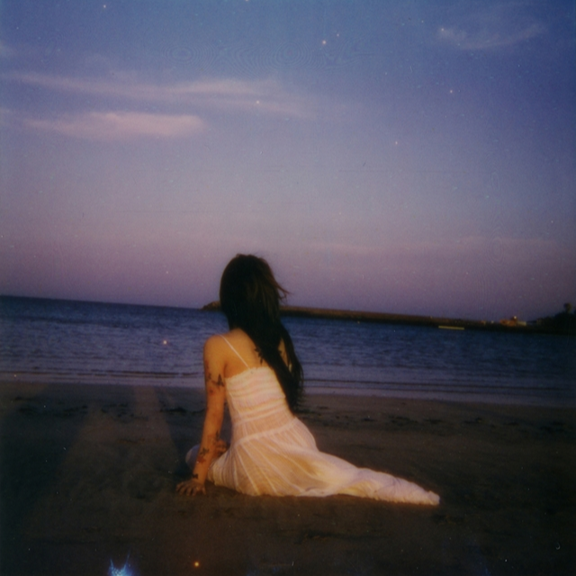
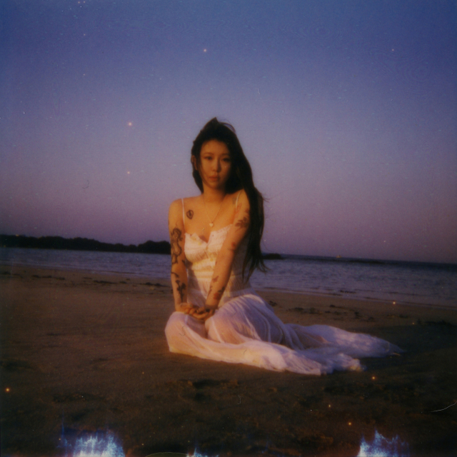
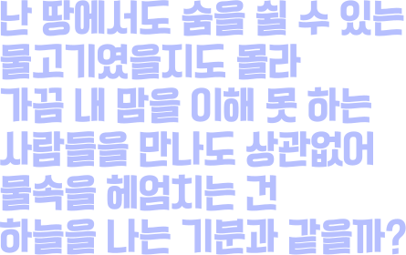
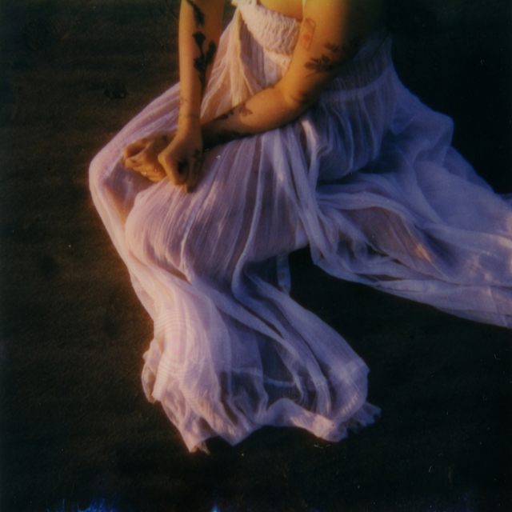

- 싱글 Pisces
- 록/메탈 - 22052406:00PM
- Album by Yerin Back
가장 순수하고 편견 없는 마음을 표현했다.
Tracklist
- 
-

01 그게 나였네 It was me
Composed by 백예린
Lyrics by 백예린
Arranged by 백예린, 구름
Vocal 백예린
Chorus 백예린
Keyboard 백예린, 구름
MIDI programming 구름 - 
-

02 물고기 Pisces (title)
Composed by 구름
Lyrics by 구름
Arranged by 구름
Vocal 백예린
Chorus 백예린, 구름
Bass guitar 구름
Elec guitar 구름
MIDI programming 구름
- 
-

03 막내 The loved one
Composed by 백예린
Lyrics by 백예린
Arranged by 구름
Vocal 백예린
Chorus 백예린, 구름
Keyboard 구름
MIDI programming 구름